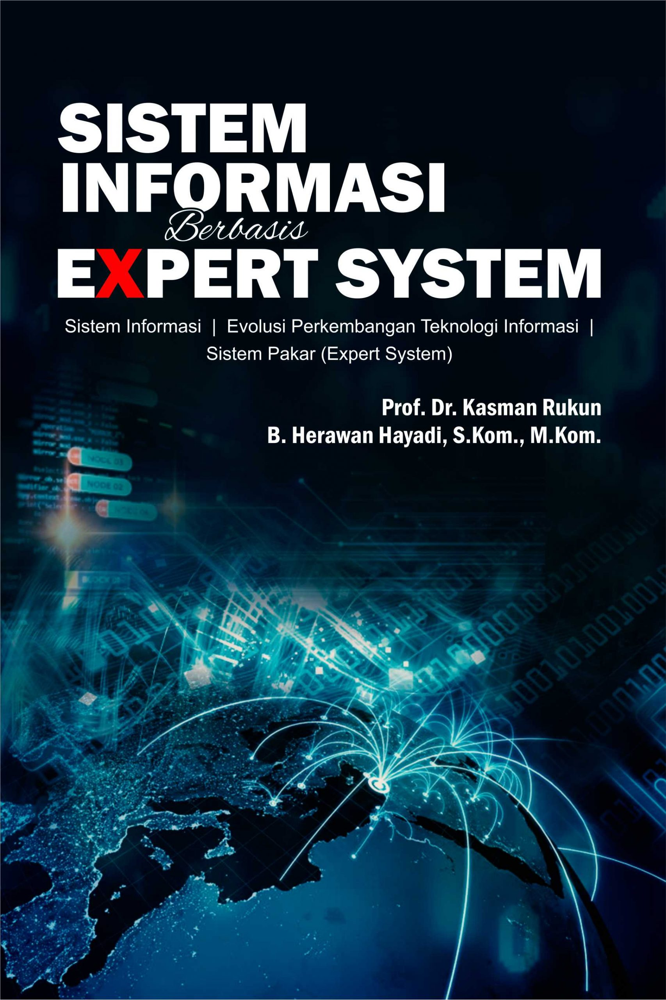
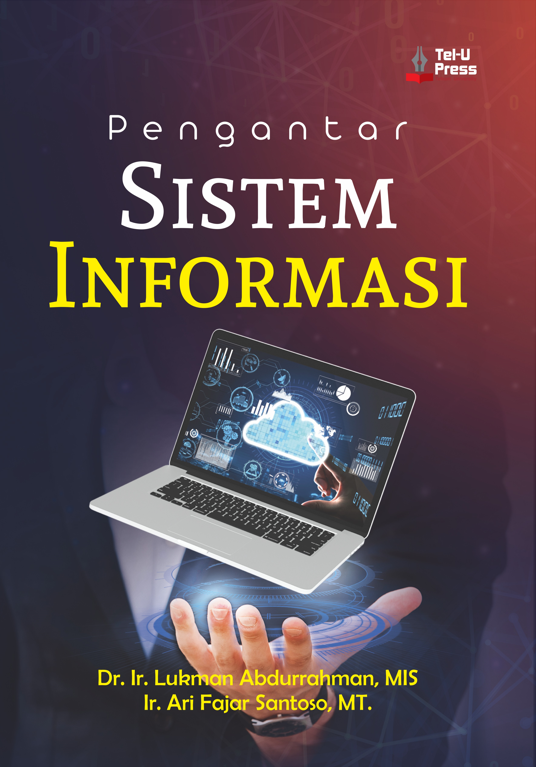

Pengertian Sistem Informasi dan Contoh Penerapan pada Dunia Industri
Teknologi dan manusia saat ini menjadi satu kesatuan dan menjadi dua hal yang tidak dapat
dipisahkan. Dimana, kedua faktor tersebut saling berkaitan dan dapat digabung menjadi sebuah
sistem. Istilah populer untuk saat ini dinamakan dengan sistem informasi.
Berikut adalah buku tentang sistem informasi:


Buku sistem informasi